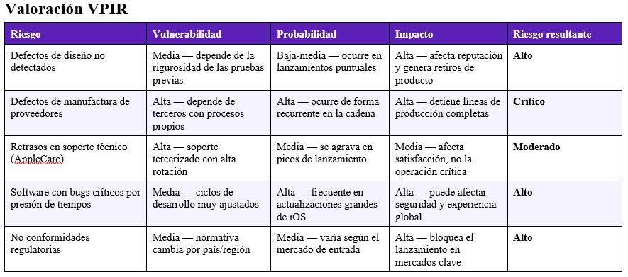
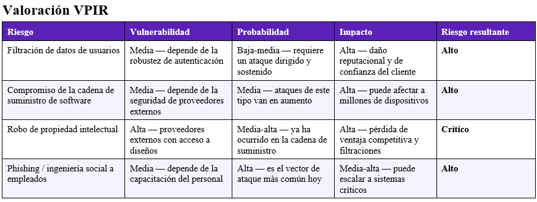

Apple Inc.
Apple Inc.
Análisis organizacional: entradas y salidas, partes interesadas, entorno PESTEL y procesos
Análisis organizacional: entradas y salidas, partes interesadas, entorno PESTEL y procesos
Análisis detallado de los recursos que ingresan al sistema de Apple (materiales, talento, tecnología) y el valor que se entrega al mercado (productos, servicios, dividendos).

Mapeo del nivel de influencia e interés de los stakeholders clave: desde clientes y empleados hasta proveedores e inversores.
Asignacion de responsables por proceso: Responsable, Aprueba, Consultado e Informado.
Impacto de los factores Políticos, Económicos, Socioculturales, Tecnológicos, Ecológicos y Legales en el ecosistema global de Apple.

Visualización de los procesos estratégicos, misionales (I+D, ensamblaje, marketing, retail) y de apoyo que mantienen la maquinaria operativa.

Apple orienta su gestión hacia la protección del medio ambiente, la salud y la seguridad. Busca cumplir y superar las normas legales ambientales y de seguridad aplicables. También promueve la mejora continua de sus procesos y su desempeño ambiental. La empresa trabaja en la reducción de sus emisiones de gases de efecto invernadero. Mediante su estrategia Apple 2030, busca disminuir significativamente su huella de carbono. Además, fomenta el uso de energías renovables en sus operaciones y proveedores. Apple impulsa el uso de materiales reciclados y responsables en sus productos. También desarrolla acciones para reducir residuos, consumo de agua y contaminación. Exige a sus proveedores prácticas responsables en materia laboral, ambiental y de seguridad. Finalmente, integra la sostenibilidad en el diseño, fabricación y ciclo de vida de sus productos.
Matriz de aspectos e impactos ambientales asociada a los productos y actividades de Apple.


Este corte todavía no tiene contenido en esta página.